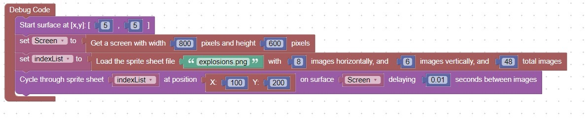

<H1>How to cycle through an entire sprite sheet </h1>
This code will show all the images in a sprite sheet from the first to the last<br>
It can be used to show an explosion <br>
Note: No other activity can occur while the explosion is being displayed<br>
<br>
<hr>

